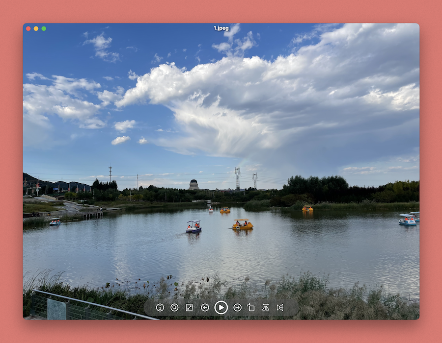
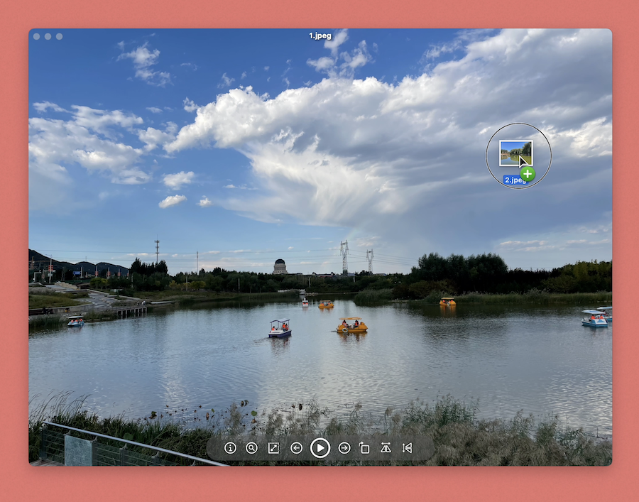
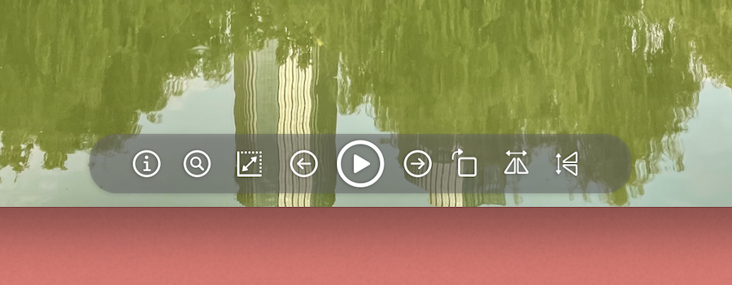
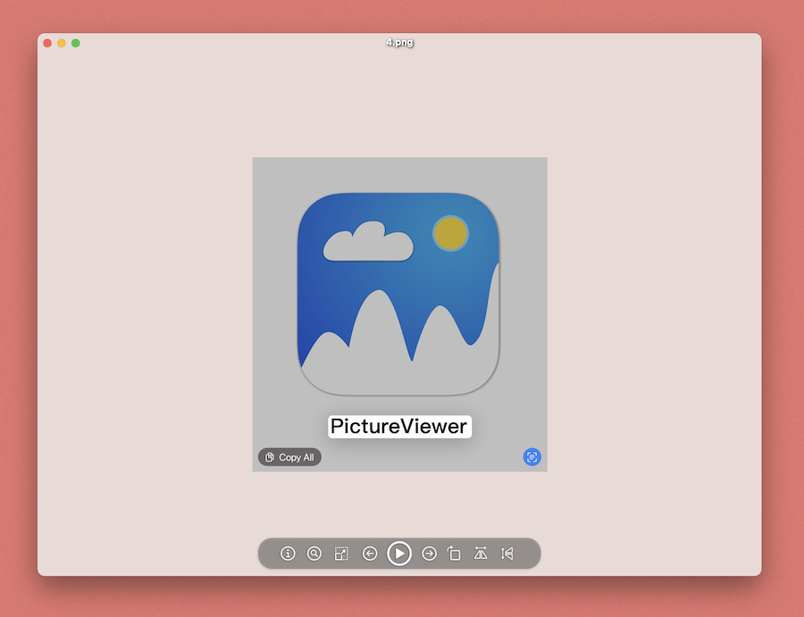
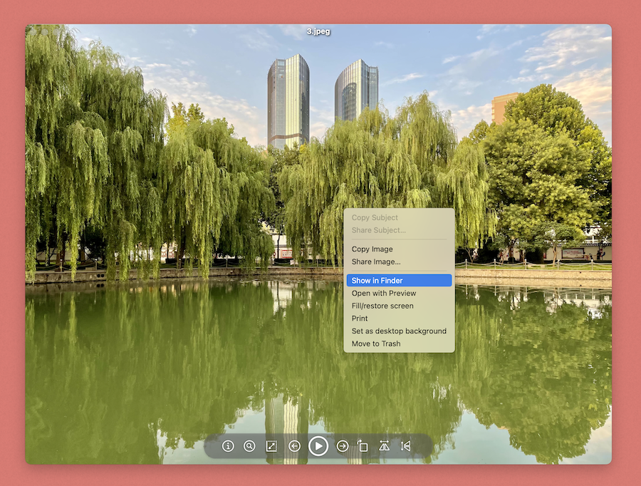

PictureViewer

Features
Imaginary image viewing tool
Simple image viewing tool, you can control various display methods of images through the control panel
You can directly open the App and select the picture, or select App through the right-click menu and drag the file into the App to display the picture.
Supports most image formats
You can set zoom, fill window, fill screen and actual size display
Rotation, horizontal flipping and vertical flipping display can be set
Automatically identify content, characters and other objects or text in pictures
Support full screen playback mode
Right-click on an image to open with preview, display in Finder, copy image, copy file, print, set as desktop background and move to Trash
